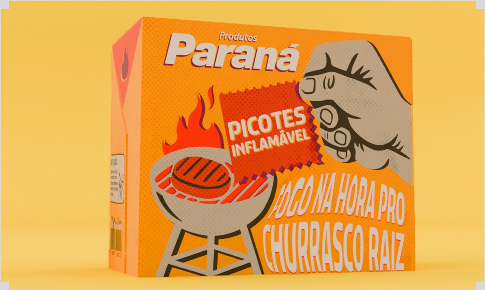
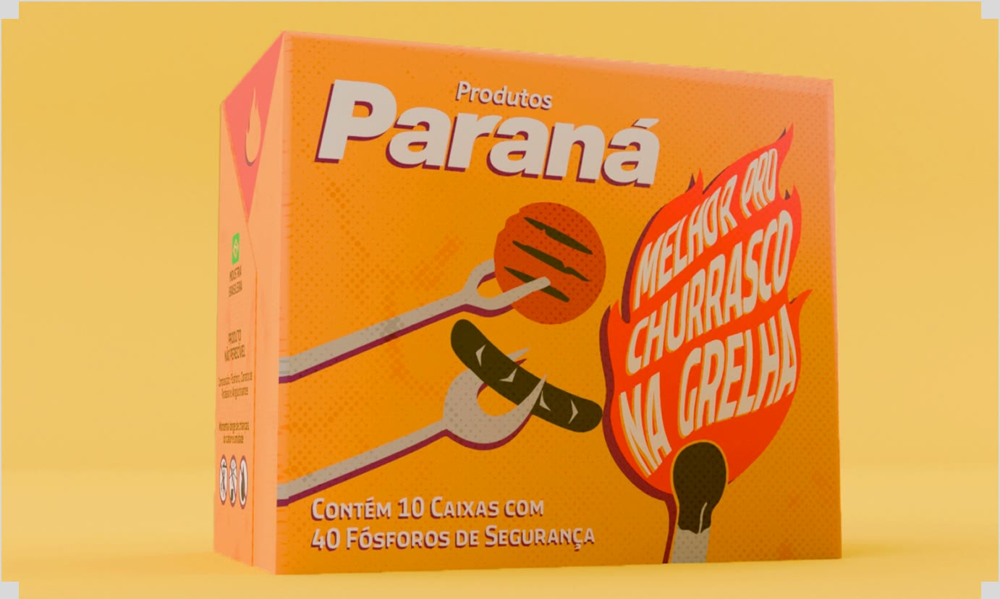
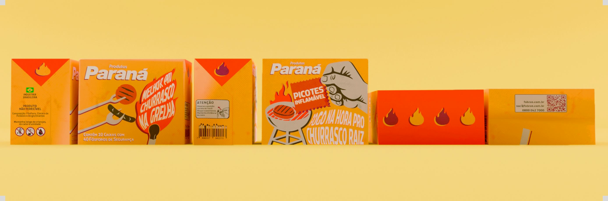

Fósforo Paraná
Um redesign de embalagem para a marca Fósforo Paraná, compôs o objetivo de atualizar a embalagem da marca, tornando o produto mais atraente e claro no ponto de venda, sem perder sua tradição estabelecida no mercado e reconhecimento junto ao público.
O resultado é uma embalagem mais atrativa e contemporânea, alinhada tanto à memória quanto ao uso do cotidiano.
DisciplinaEmbalagens
Ano2025-2



o universo do churrasco
e da cultura do fogo,
reunindo referências
como calor, raiz, família,
encontro, tradição
e popularidade.

caixa de fósforoarraste para girar
caixa secundáriaarraste para girar